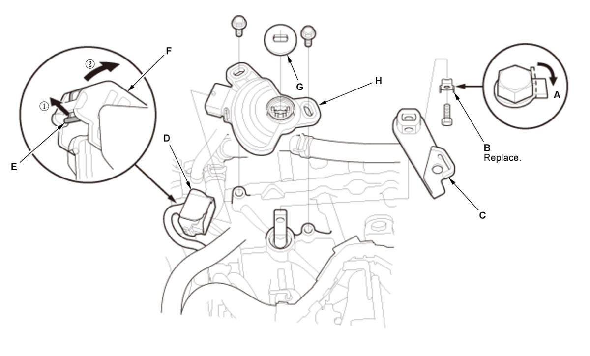

Transmission Range Switch Removal and Installation (K20C2, CVT model): Removal
- Air Cleaner - Remove
- Shift Cable (Transmission Side) - Disconnect
- Control Lever - Position
1. Apply the parking brake. 2. Turn the control lever (A) to the P position, then turn it back two clicks to the N position.
- Transmission Range Switch - Remove
1. Pry down the lock tab (A) of the lock washer (B).
Fig 1: Exploded View Of Transmission Range Switch Components And Connector With Disconnection Sequence
Courtesy of HONDA, U.S.A., INC.2. Remove the control lever (C) and the lock washer.
3. Disconnect the connector (D) by pulling the lock (E) and the lever (F) in the numbered sequence shown.
4. Remove the control shaft cover (G).
5. Remove the transmission range switch (H).